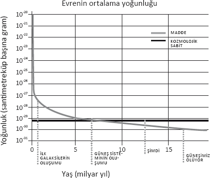
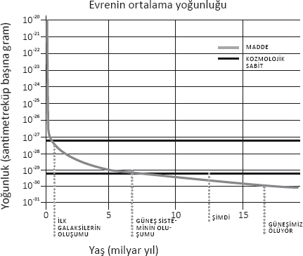

Bir yaratıcı ve bir plan olduğunu varsaymak, insanları, hasta olmak için yaratıldığımız, iyi olmamızın buyurulduğu zalimce bir deneyin nesneleri haline getirir.
Christopher Hitchens
Öyle bir donanımımız var ki başımıza gelen her şeyin önemli ve anlamlı olduğunu düşünürüz. Rüyamızda bir arkadaşın kolunu kıracağını görürüz, ertesi gün bileğini burktuğunu öğreniriz. Vay canına! Kozmik bir şey işte! Yoksa geleceği mi gördüm?
Fizikçi Richard Feynman insanlara "Bugün başıma ne geldi, anlatsam inanmazsın! İnanamazsın!" demeye bayılırdı. Ne olduğunu soranlara da "Kesinlikle hiçbir şey!" cevabını verirdi. Söylemeye çalıştığı şey şuydu: Yukarıda anlattığım gibi bir rüya gördüğümüzde, insanlar ona bir anlam verirler. Ama hiçbir şekilde hiçbir öngörüde bulunmayan onlarca saçma rüya gördüklerini unuturlar. Gün içinde çoğunlukla dikkat çekici hiçbir şey olmadığını unuttuğumuzdan, olağandışı bir şey gerçekleştiğinde olasılığın doğasını yanlış okuruz: Yeterince çok sayıda olay arasında olağandışı bir şeyin kazara gerçekleşmesine elimiz mahkumdur.
Bu durum evrenimiz açısından nasıl geçerli olabilir?
Boş uzayın enerjisinin sıfır olmadığının, bunun yanı sıra parçacık fiziğinin ileri sürdüğü fikirlere deyanarak bahsettiğim tahminden 120 büyüklük düzeni daha küçük bir değerde olduğunun keşfedilmesine kadar, fizikçiler arasında genel kabul gören mantık doğada ölçtüğümüz temel parametrelerin hepsinin anlamlı olduğu yönündeydi. Bununla şunu kast ediyorum: Bir şekilde, temel ilkelere dayanarak kütleçekimin neden doğadaki diğer kuvvetlerden çok daha zayıf, protonun neden elektrondan 2000 kat daha ağır, neden üç temel parçacık ailesi olduğunu kaçınılmaz olarak anlayabilecektik. Bir başka deyişle, doğa kuvvetlerine en küçük ölçeklerde hükmeden temel kanunları anladığımızda, bütün bu gizemler de bu kanunların doğal sonuçları olarak gözler önüne seriliverecekti.
(Öte yandan tümüyle dini bir argüman bütün temel sabitlerin anlamlı olduğunu, çünkü Tanrı'nın evrenimiz için çizilmiş ilahi bir tasarımın bir parçası olarak her birinin sahip olduğu değerde olmasını seçtiğini ileri sürerek anlamı aşırıya çekecektir. Bu durumda hiçbir şey tesadüfi değildir, yine aynı sebepten hiçbir şey öngörülemez ya da açıklanamaz. Hiçbir yere gitmeyen ve inananı rahatlamak dışında, evrene hükmeden fizik kanunlarıyla ilgili hiç yararlı bir şey üretmeyen bir argümandır bu.)
Ne var ki boş uzayda enerji olduğunun keşfedilmesi, birçok fizikçiyi doğada neyin gerektiği ve neyin tesadüf olduğu yolundaki fikirlerini yeniden gözden geçirmeye yöneltti.
Bu yeni modeli harekete geçiren şey, son bölümde verdiğim argümandan kaynaklanıyordu: Karanlık enerji bugün ölçülebilir, çünkü "şimdi" evrenin tarihinde boş uzaydaki enerjinin maddenin enerji yoğunluğuna yakın olduğu tek zamandır.
Peki bizler neden evrenin tarihinde böyle "özel" bir zamanda yaşıyor olalım ki? Aslında bu, Kopernik'ten bu yana bilime damgasını vuran her şeyin yüzüne çarpar. Dünya'nın Güneş Sistemi'nin merkezinde olmadığını, Güneş'in gözlenebilir evrendeki 400 milyar galaksiden yalnızca biri olan bir galaksinin ıssız dış kesimlerinde bir yıldız olduğunu öğrendik. Evrendeki yerimiz ve zamanımızla ilgili özel bir şey olmadığını söyleyen "Kopernik İlkesi"ni kabul etmeye geldi sıra.
Ne var ki boş uzayın enerjisi olduğu gibiyken, özel bir zamanda yaşıyormuş gibi görünüyoruz. Bu durum "zamanın kısa tarihi"ne ilişkin şu resimle gayet iyi gösterilebilir:

Grafikteki iki eğri evrendeki bütün maddenin enerjisiyle, boş uzayın (kozmolojik bir sabit olduğunu varsaydığımız) enerji yoğunluğunu zamanın bir fonksiyonu olarak temsil ediyor. Görebileceğiniz üzere evren genişlerken (galaksiler arasındaki uzaklık daha açılır, bu yüzden de madde "gevşer"ken), bekleyebileceğiniz üzere maddenin yoğunluğu düşer. Ne var ki boş uzaydaki enerji yoğunluğu sabit kalır, çünkü diyebiliriz ki boş uzayda gevşeyecek hiçbir şey yoktur! (Ya da fazla mizahi olmayan bir üslupla anlattığım üzere evren genişlerken boş uzay üzerinde iş yapar.) Şu anda bu iki eğri nispeten yakın bir kesişme içinde, anlatmış olduğum tuhaf tesadüfün kaynağında da bu var.
Şimdi de boş uzayın enerjisi, bugün tahmin ettiğimiz değerden diyelim ki 50 kat daha büyük olursa neler olurdu onu bir düşünelim. Bu durumda iki eğri aşağıdaki şekilde gösterildiği üzere, farklı, daha önceki bir tarihte kesişirdi.

Boş uzayın enerjisine verdiğimiz daha yüksek değeri temsil eden eğri ile evrendeki madde yoğunluğunu belirten eğrinin kesiştiği tarih, galaksilerin ilk kez oluştuğu tarihtir, Büyük Patlama'dan yaklaşık bir milyar yıl sonrasıdır. Ama boş uzayın enerjisinin kütleçekimsel olarak itici olduğunu unutmayalım. Galaksilerin oluştuğu tarih öncesinde evrendeki enerjiye bu enerji hakim olsaydı, bu enerjiden kaynaklanan itici güç maddenin bir araya toplanmasına yol açan normal çekici kütleçekim kuvvetini (kelimenin tam anlamıyla) aşardı. Ve galaksiler hiç oluşmazdı!
Ama galaksiler oluşmasaydı, yıldızlar oluşmazdı. Yıldızlar oluşmamış olsaydı, gezegenler oluşmamış olurdu. Gezegenler oluşmamış olsaydı, astronomlar oluşmamış olurdu!
Bu yüzden boş uzayın enerjisinin gözlediğimizden sadece elli kat daha büyük olduğu bir evrende, bugün bu enerjiyi ölçmeye çalışacak hiç kimse olmazdı.
Bu bize bir şey söylüyor olabilir mi? Evrenimizin ivmelendiğinin keşfedilmesinden kısa bir süre sonra fizikçi Steven Weinberg on yıl önce (karanlık enerjinin keşfedilmesinden önce) geliştirdiği bir argümana dayanarak, bugün ölçtüğümüz kozmolojik sabit değerinin bir şekilde "antropikal" olarak seçilmesi halinde "tesadüf problemi"nin de çözüleceğini ileri sürmüştü. Yani bir şekilde birçok evren varsa, evrenlerin her birinde boş uzayın enerjisinin değeri bütün enerjiler arasında bir olasılık dağılımına dayanan rastgele seçilmiş bir değer alıyorsa, bu değerin ancak bugün ölçtüğümüzden farklı olmadığı evrenlerde bildiğimiz biçimiyle hayatın evrilmesi mümkün olacaktı. Bu yüzden belki de kendimizi boş uzayın enerjisinin daha büyük olduğu bir evrende bulamadığımız için çok küçük değerde olduğu bir evrende buluyorduk. Bir başka deyişle, yaşayabileceğimiz bir evrende yaşadığımızı bulmamız çok da şaşırtıcı değildi!
Ne var ki bu argüman, ancak birçok farklı evren olasılığı ortaya çıktıysa matematiksel olarak anlamlıdır. Birçok farklı evrenden bahsetmek kulağa bir oksimoron gibi gelebilir. Nihayetinde evren kavramı geleneksel olarak "mevcut olan her şey"le eş anlamlı hale gelmiştir.
Ne var ki daha kısa bir süre önce "Evren" daha basit, daha akla yatkın bir anlam kazandı. "Evrenimiz"in şimdi görebileceğimiz ve görüp görebildiğimiz her şeyden oluştuğunu düşünmek artık geleneksel olmuştur. O halde fiziksel olarak evrenimiz ya bir zamanlar bizi etkilemiş olan ya da ilerde bizi etkileyecek olan her şeyden oluşmaktadır.
Evren için bu tanımı seçtiğiniz an, başka "evrenler" (tıpkı okyanusun varlığı yüzünden iletişimleri kopmuş adalar gibi, bizimkinden her zaman nedensel olarak kopuk olmuş ve olacak bölgeler) olması olasılığı en azından ilkesel olarak mümkün hale gelir.
Evrenimiz o kadar geniştir ki daha önce vurguladığım üzere, imkansız olmayan bir şeyin onun içinde bir yerlerde meydana çıkması neredeyse garantidir. Her zaman ender olaylar gerçekleşir. Aynı ilkenin, birçok evren, yani bugün bilindiği üzere bir "Çokevren" olasılığı için geçerli olup olmadığını merak edebilirsiniz. Kuramsal durumun aslında basit bir olasılıktan daha kuvvetli olduğu anlaşılıyor. Bugün parçacık kuramında halihazırda süregiden faaliyetin büyük bölümünün ardında çok sayıda ana fikir, öyle görünüyor ki bir çokevren gerektiriyor.
Bunu vurgulamak istiyorum, çünkü bir yaratıcıya ihtiyaç duyanlarla yaptığım tartışmalarda, bir çokevrenin varlığı cevapları ya da belki de soruları tükenmiş fizikçiler tarafından sorundan kaçınma yolunda bir girişim olarak görülüyor. Belki mesele böyledir, ama şimdilik öyle değil. Küçük ölçeklerde bildiğimiz haliyle fizik kanunlarını genişletip daha kapsamlı bir kuram haline getirmekle ilgili düşünebildiğimiz neredeyse bütün mantıklı olasılıklar, büyük ölçeklerde evrenimizin eşsiz olmadığını söylüyor.
Şişme olgusu herhalde ilk ve belki de en iyi gerekçeyi oluşturur. Şişme tablosunda, büyük bir enerjinin evrenin bir bölgesine kısa süre boyunca hakim olduğu süre zarfında, bu bölge katlanarak genişlemeye başlar. Bir noktada bu "sahte boşluk" içindeki küçük bir bölge, bölge içinde bir faz geçişi meydana geldiğinden şişme durumundan çıkabilir, sonra kendi gerçek, daha düşük enerji değerini bulur, bundan sonra bu bölgedeki genişleme katlanarak ilerlemez. Ama bu gibi bölgeler arasındaki uzay katlanarak genişlemeyi sürdürecektir. Herhangi bir zamanda faz geçişi uzayın tamamında gerçekleşmediği sürece, uzayın neredeyse tamamı şişen bir bölgenin içinde kalacaktır. Şişen bölge, şişmeden ilk çıkan bölgeleri neredeyse ölçülemez uzaklıklarla ayıracaktır. Tıpkı bir yanardağdan lavların fışkırması gibi. Kayaların bir bölümü soğuyup katılaşacaktır, ama mağmadan bir deniz üzerinde yüzen bu kayalar birbirlerinden ayrılacaktır.
Durum daha da ciddi boyutlar kazanabilir. Alan Guth'la birlikte modern şişme kuramının başlıca mimarlarından biri olan Andre Linde 1986'da muhtemelen daha genel bir senaryoyu ileri sürüp incelemişti. ABD'de bulunan başka bir mucit Rus kozmoloğu, Alex Vilenkin de bir anlamda bu öngörüde bulunmuştu. Linde de Vilenkin de büyük Rus fizikçilerinde rastlanan o özgüvene sahipti, ama hikayeleri hayli farklıydı. Linde Sovyetler Birliği'nin çöküşü sonrasında ABD'ye göç etmeden önce Sovyetler'in fizik enstitüsünde çalışmıştı. ABD'ye geldiğinden beri de cesur, parlak ve eğlenceli kişiliğiyle kuramsal parçacık kozmolojisinin büyük bölümüne hakim olmayı sürdürüyordu. Vilenkin çok daha önce göç etmişti, daha fizikçi olmadan önce. ABD'de öğrenim görürken gece bekçiliği de dahil çeşitli işlerde çalışmıştı. Her zaman kozmolojiye ilgi duysa da lisans eğitimi için kazara yanlış okula müracaat etmiş, sonunda Sıkışık Madde Fiziği'nde (maddelerin fiziği) bir tez çalışması yaparken bulmuştu kendini. Sonra benim başkanı olacağım Case Western Reserve Üniversitesi'nde doktora sonrası araştırmacı olarak bir iş bulmuştu. Bu dönemde süpervisörü Philip Taylor'a haftanın birkaç gününü kendisine verilen projelerin yanı sıra kozmoloji çalışarak geçirip geçiremeyeceğini sormuştu. Philip bana daha sonra Alex'in yarı zamanlı işine rağmen o zamana kadar gördüğü en üretken doktora sonrası araştırmacı olduğunu söylemişti.
Her neyse... Linde'nin farkına vardığı şey şuydu: Şişme sırasında kuantum dalgalanmaları, şişmeyi en düşük enerji haline sürükleyen alanı genellikle itebilir, böylece şişmeden zarif bir çıkış sağlayabilirse de bazı bölgelerde kuantum dalgalanmalarının alanı çok daha yüksek enerjilere sürükleme, böylece şişmenin son bulacağı değerlerden uzaklaştırma, böylece şişmenin durmaksızın sürme olasılığı her zaman vardı. Bu gibi bölgeler daha uzun süre boyunca genişleyeceği için şişen uzay şişmeyen uzaydan hep daha fazla olacaktı. Bu bölgeler içinde kuantum dalgalanmaları yine bazı alt bölgeleri şişme sürecinden çıkmaya sürükleyecek, böylece katlanarak genişlemeyi durduracaktı, ama yine de kuantum dalgalanmalarının şişmenin daha uzun süre boyunca devam etmesine yol açacağı bölgeler olacaktı. Böyle devam edecekti.
Linde'nin "kaotik şişme" adını verdiği bu tablo aslında Dünya üzerinde daha aşina olduğumuz kaotik sistemlere benzer. Örneğin kaynamakta olan yulaf lapasına bakalım. Bir noktada bir gaz baloncuğu yüzeyde patlar, bu durum yüksek ısıdaki sıvının bir faz geçişini tamamlayıp buhar oluşturduğu bölgeler olduğunu gösterir. Ama baloncukların arasında yulaf lapası hareket etmekte, yumuşakça dalgalanıp akmaktadır. Geniş ölçeklerde düzenlilik vardır, her zaman bir yerlerde patlayan baloncuklar olur. Ama yerel olarak, baktığınız yere göre işlerin farklı olduğunu görürsünüz. Kaotik olarak şişen evrende de böyle olacaktır. Eğer şişmesi durmuş bir "baloncuğun" içindeyseniz evreniniz, çevrenizde hâlâ şişmekte olan geniş uzaydan daha farklı görünecektir.
Bu tabloda şişme ebedidir. Bazı bölgeler, hatta uzayın çoğu ebediyen şişmeye devam edecektir. Şişmeden çıkan bölgeler, nedensel olarak bağlantısız, ayrı evrenler haline geleceklerdir. Şişme ebediyse bir Çokevren'in kaçınılmaz olduğunu, ebedi şişmenin ise çoğu, hatta bütün şişme senaryoları arasında açık arayla en muhtemel senaryo olduğunun altını çizmek istiyorum. Linde'nin 1986 tarihli makalesinde belirttiği üzere: "Evrenimizin neden tek mümkün evren olduğu şeklindeki eski sorunun yerini artık bizimki gibi mini evrenlerin varlığının mümkün olduğu kuramların yönelttiği soru aldı. Soru hâlâ çok zor, ama önceki soruya göre çok daha kolay. Kanımızca, evrenin genel yapısıyla ve bizim dünyadaki yerimizle ilgili bakış açısının değişmesi, şişen evren senaryosunun gelişmesinin en önemli sonuçlarından biridir."
Linde'nin vurguladığı, o zamandan beri de açıklık kazandığı üzere, bu tablo fizik açısından bir başka yeni olasılığa da kapı aralar. Doğada, şişen bir evrenin nihayetinde çürüyüp dönüşeceği, evrenin birçok olası düşük enerjili kuantum halinin bulunması gayet kolay olabilir. Bu alanların kuantum hallerinin yapısı bu gibi her bölgede farklı olacağından, her bölge/evrendeki temel fizik kanunlarının niteliği farklı görünebilir.
Burada daha önce sunduğumuz antropik argümanın kendini gösterebileceği ilk "manzara" karşımıza çıkar. Evrenimizin şişme sonrasında varabileceği birçok farklı hal varsa, belki de içinde yaşadığımız, galaksilerin oluşabileceği kadar küçük, sıfır olmayan bir boşluk enerjisinin bulunduğu evren, potansiyel olarak sonsuz bir ailenin bir mensubudur; galaksiler, yıldızlar, gezegenler ve hayatın varlığını desteklediği için araştırmacı bilim insanları için seçilmiş evrendir.
Ne var ki "manzara" (landscape) terimi ilk kez bu bağlamda ortaya çıkmamıştır. Son çeyrek yüzyılın büyük bölümünde parçacık kuramının itici gücü olan kör inançla, yani sicim kuramıyla ilişkili çok daha etkili bir pazarlama mekanizmasının teşvik ettiği bir terimdir. Sicim kuramı temel parçacıkların çok daha temel bileşenlerden, parçacıklardan değil, titreşen sicimler gibi davranan nesnelerden oluştuğunu koyutlar. Tıpkı bir kemandaki tellerin titreşiminin farklı notalar yaratmasında olduğu gibi, bu kuramda da farklı türde titreşimler prensipte doğada gördüğümüz bütün o farklı temel parçacıklar gibi davranan nesneler üretir. Sorun şudur ki, bu kuram sırf dört boyutla tanımlandığında matematiksel olarak tutarlı değildir, anlamlı olabilmesi için birçok boyutun varlığını gerektirmektedir. Diğer boyutlara ne olduğu hemen belli değildir, sicimler dışında başka hangi nesnelerin bu kuramı tanımlamakta önemli olabileceği de; bunlar ortaya çıkmış, çözülmemiş, bu fikre duyulan ilk ilgiyi boğmuş birçok zorluktan yalnızca birkaçıdır.
Burası sicim kuramını ayrıntılı bir biçimde gözden geçirmenin yeri değil, aslına bakarsanız ayrıntılı bir değerlendirme yapabilmek muhtemelen mümkün değil, çünkü son 25 yılda açıklık kazanan bir şey varsa o da önceden sicim kuramı denilen şeyin çok daha ayrıntılı ve karmaşık, temel niteliği ve oluşumu hâlâ gizemini koruyan bir şey olduğudur.
Bu dikkat çekici kuramsal eserin aslında gerçek dünyayla ne ilgisi olduğuna dair hâlâ bir fikrimiz yok. Yine de henüz doğa hakkında tek bir deneysel gizemi başarıyla çözme becerisi göstermeksizin fizik camiasının vicdanına bu kadar başarıyla işleyen başka bir kuramsal tablo daha olmamıştır.
Birçok kişi bu son cümlemi sicim kuramının bir eleştirisi olarak alacaktır, ama geçmişte bir hain olarak damgalanmış olsam da, burada niyetim gerçekten de bu değil, sicim kuramının başlıca savunucularından biri olan dostum Brian Greene'le katıldığım, konu hakkındaki çok sayıda konferans ve tartışmada da niyetim hiç bu olmadı. Daha ziyade bir gerçeklik sınaması için popülerlik bulutunu dağıtmanın sadece önemli olduğunu düşünüyorum. Sicim kuramı kuramsal fiziğin en büyük temel tutarsızlıklarından birine, (Einstein'ın Görelilik Kuramı'nın kuantum mekaniği kuramlarıyla birlikte, evrenin çok küçük ölçeklerde nasıl davrandığına dair mantıklı tahminlerde bulunacak şekilde sunma) ışık tutabilecek harika fikirler, muhteşem bir matematik içeriyor.
Sicim kuramının bu sorunu nasıl aşmaya çalıştığı üzerine koca bir kitap kaleme aldım, ama buradaki amaçlarımız gereği çok kısa bir biçimde meseleyi özetlemem gerekiyor. Ana varsayımı dile getirmek kolay olsa da, uygulamak zordur. Çok küçük ölçeklerde, kütleçekim ile kuantum mekaniği arasındaki sorunlarla ilk karşılaşılan ölçeklerde, temel parçacıklar kapalı halkalar oluşturuyor olabilir. Bu gibi kapalı halkaların titreşimleri arasında, kuantum kuramına göre kütleçekim kuvvetini aktaran parçacığın, gravitonun özelliklerini taşıyan bir titreşim vardır. Dolayısıyla bu gibi sicimlerin kuantum kuramı, prensipte gerçek bir kuantum kütleçekim kuramının inşa edilebileceği bir oyun sahası oluşturur.
Şurası kesindir ki böyle bir kuramın, kütleçekimle ilgili standart kuantum yaklaşımlarının ileri sürdüğü, utanç verecek kadar sonsuz sayıda öngörüden kaçınabileceği keşfedilmiştir. Ne var ki bir sorun vardır. Kuramın en basit versiyonuna göre, sonsuz sayıdaki bu gibi tahminler, ancak ve ancak sicimler sırf aşina olduğumuz üç uzay ve bir zaman boyutunda değil, yirmi altı boyutta titreşen temel parçacıkları oluşturuyorsa önlenebilir!
Karmaşıklıkta (ve belki de inançta) böyle bir sıçramanın, çoğu fizikçinin kurama ilgisini söndürmüş olmasını bekleyebilirsiniz, ama 1980'lerin ortalarında başta İleri Araştırmalar Enstitüsü'nde (Institute for Advanced Study) Edward Witten olmak üzere birçok bireyin yaptığı güzel matematiksel çalışmalar, bu kuramın prensipte bir kuantum kütleçekim kuramı sunmaktan fazlasını yapabileceğini gösterdi. Yeni matematiksel simetrilerin, en başta da "süpersimetri" denilen, dikkat çekici derecede güçlü bir matematiksel çerçevenin ortaya konmasıyla birlikte, kuramın tutarlılığı için gerekli boyut sayısını 26'dan 10'a indirmek mümkün oldu.
Ne var ki daha da önemlisi, sicim kuramı bağlamında kütleçekimi doğanın diğer kuvvetleriyle tek bir kuram çerçevesinde birleştirmek, ayrıca doğada bilinen bütün temel parçacıkların varlığını tek tek açıklamak mümkün görünüyordu! Sonunda, dört boyutlu dünyamızda gördüğümüz her şeyi yeniden üretebilecek, on boyutlu tek bir kuram olabilirmiş gibi görünüyordu.
Sicim kuramının "her şeyin kuramı" olduğu yönünde iddialar sadece bilimsel literatürde değil, popüler literatürde de yayılmaya başladı. Sonuçta, herhalde "süpersicimler"e aşina olan insanların sayısı, düşük ısılarda gözlenen maddenin en dikkat çekici özelliklerinden biri olmakla kalmayıp maddelerin kuantum oluşumuna dair anlayışımızı da değiştirmiş olan "süperiletkenlik" olgusuna (bazı maddeler düşük ısılarda soğutulduğunda, hiçbir direnç olmaksızın elektrik iletebilirler) aşina olan insan sayısından fazladır.
Nihayetinde aradan geçen 25 yıl sicim kuramına iyi gelmedi. Dünyanın en iyi kuramsal zihinleri dikkatlerini bu kuram üzerinde yoğunlaştırmaya başlar, bu süreçte yeni sonuçlar ve epeyce yeni matematik üretirken (örneğin Witten matematik alanında en büyük ödülü kazandı), sicim kuramındaki "sicimler"in muhtemelen temel nesneler olmadığı açıklık kazandı. Hücrelerdeki "membran"lardan (zar) hareketle, "bran" denilen, yüksek boyutlarda var olan daha karmaşık yapılar muhtemelen kuramın davranış biçimini kontrol ediyor.
Daha da beteri, kuramın benzersizliği ortadan kaybolmaya başladı. Ne de olsa deneyimlediğimiz dünya on boyutlu değil, dört boyutludur. Geri kalan altı uzamsal boyuta bir şey olmuş olması gerekir, bunların görünmezliğiyle ilgili kanonik açıklama da bir şekilde "sıkıştıkları" yönündedir; yani o kadar küçük ölçeklerde kıvrılmışlardır ki, onları kendi ölçeklerimizde, hatta bugün en yüksek enerjili parçacık hızlandırıcılarımızın incelediği küçük ölçeklerde bile tespit edemeyiz. Yüzeysel olarak bakınca pek farklı görünmeseler de bu varsayılan gizli bölgelerle maneviyat ve din alanları arasında bir fark vardır. Bir kere, yeterince enerjik bir hızlandırıcı yapılabilirse (her halde uygulama sınırlarının ötesinde kalır bu, ama mümkün olanın sınırlarının ötesinde değildir) prensipte bu bölgelere ulaşılabilir. İkincisi sanal parçacıklar açısından söz konusu olduğu gibi, dört boyutlu evrenimizde ölçebildiğimiz nesneler yoluyla, bu bölgelerin varlığına dair dolaylı bir kanıt bulmayı bekleyebiliriz. Kısacası bu bölgeler, aslında evreni haklı çıkarmaktan çok, onu açıklama girişiminde bulunan bir kuramın bir parçası olarak varsayıldıklarından, nihayetinde küçük bir ihtimal de olsa ampirik sınamalarla erişilebilir olabilirler.
Ama bunun ötesinde, bu fazladan boyutların olası varlığı evrenimizin benzersiz olduğu yönündeki umudun karşısına büyük bir zorluk çıkarır. On boyutta (var olup olmadıklarını bilmediğimizi tekrarlayayım) benzersiz bir kuramla yola çıksak bile, görünmez altı boyutu sıkıştırmanın her farklı yolu, fizik kanunlarının, kuvvetlerin, parçacıkların farklı olduğu, farklı simetrilerin hükmettiği, farklı tipte dört boyutlu evrenlere yol açacaktır. Bazı kuramcılar tek bir on boyutlu sicim kuramından kaynaklanabilecek belki de 10500 tane, birbirinden farklı tutarlı dört boyutlu olası evren olabileceği tahmininde bulunmuştur. "Her Şeyin Kuramı" birden "Herhangi Bir Şeyin Kuramı" haline gelmiştir!
Bu durum, "xkcd" adındaki en beğendiğim bilimsel karikatür dizisinden bir karikatürde alaycı bir biçimde örneklenmişti. Bu karikatürde biri diğerine şöyle der: "Aklıma muhteşem bir fikir geldi. Ya bütün madde ve enerji titreşen sicimlerden oluşuyorsa?" Diğeri "Peki. Ama ne anlama gelir ki bu?" İlki cevaplar: "Ne bileyim!"
Bundan biraz daha nükteli bir anekdot var; Nobel ödüllü fizikçi Frank Wilczek sicim kuramcılarının dart oynamanın yeni bir yolunu icat edercesine fizik yapmanın yeni bir yolunu icat ettiğini ileri sürmüştü. Önce boş bir duvara dart atılır, sonra duvara gidilip dartın girdiği yere bir hedef tahtası çizilir.
Bu belki biraz fazla hınzırca, çünkü nihayetinde sicim kuramı üzerine çalışanlar içtenlikle, içinde yaşadığımız dünyaya hükmedebilecek ilkeleri keşfetmeye çalışıyorlar. Yine de sicim kuramcıları için büyük bir yüzkarası olan olası dört boyutlu evrenler sürüsü artık kuramın bir meziyeti haline gelmiş durumda. On boyutlu bir "çokevren"e birçok farklı dört boyutlu evren (ya da beş boyutlu ya da altı boyutlu vs.) bulunabileceğini, her birinde farklı fizik kurallarının geçerli olabileceğini, üstelik her birinde boş uzayın enerjisinin farklı olabileceğini hayal edebiliriz.
Bütün bunlar duruma uygun kalıpta kesilmiş bir uydurmaca gibi gelse de öyle görünüyor ki aslında kuramın otomatik bir sonucudur; ayrıca boş uzayın enerjisine dair antropik bir kavrayışın geliştirilmesi için doğal bir çerçeve sunan gerçek bir çokevren "manzarası" yaratıyor. Bu durumda üç boyutlu uzayda birbirinden aynı sonsuz sayıda olası evrenin var olması gerekmez. Onun yerine bizim uzayımızda tek bir noktanın üzerine üst üste binmiş, bize görünmeyen, ama her birini de dikkat çekici derecede farklı özellikler gösteren sonsuz sayıda evren hayal edebiliriz.
Bu kuramın St. Thomas Aquinas'ın birkaç meleğin aynı yeri işgal edip edemeyeceği konusundaki teolojik fikirleri kadar önemsiz olmadığını vurgulamak istiyorum. Sonraki teologlar bir iğnenin ucuna, ya da daha iyi bilindiği üzere bir topluiğnenin başına kaç meleğin sığabileceği yolunda verimsiz spekülasyonlara giriştiği gerekçesiyle bu fikre gülmüşlerdi. Aquinas bu soruyu elbette hiçbir kuramsal ya da deneysel haklı çıkarmaya girişmeksizin birden fazla meleğin aynı alanı işgal edemeyeceğini söyleyerek cevaplamıştı. (Bir de bunlar bozonik kuantum melekleriyse her halûkârda yanılıyordu.)
Böyle bir tabloyla ve yeterli matematikle sunulduğunda, prensipte fiziksel öngörülerde bulunmak beklenebilir. Örneğin daha fazla sayıda boyutu olan bir çokevrende bulunan farklı tipte dört boyutlu evrenler bulma ihtimalini tanımlayan bir "olasılık dağılımı" çıkarılabilir. Örneğin boşluk enerjisinin küçük olduğu bu gibi evrenlerin çok büyük bir bölümünde üç temel parçacık ailesi ve dört farklı kuvvet bulunduğu anlaşılabilir. Ya da ancak boşluk enerjisinin düşük olduğu evrenlerde geniş erimli bir elektromanyetizma kuvveti bulunduğu keşfedilebilir. Böyle bir sonuç boş uzayın enerjisiyle ilgili olasılıklara dayalı antropik bir açıklamanın (başka bir deyişle boşluk enerjisinin düşük olduğu, kendimizinkine benzeyen bir evren bulunması olasılık dışı değildir) somut bir fiziksel anlam taşıması yönünde akla yatkın ölçüde zorlayıcı bir kanıt oluşturur.
Ne var ki matematik bizi bu kadar ileriye taşımamıştır, bunu hiçbir zaman yapamayabilir de. Ne var ki bugünkü kuramsal yetersizliğimize rağmen, bu durum bu olasılığın aslında doğa tarafından gerçekleştirilmediği anlamına gelmez.
Yine de bu arada parçacık fiziği antropik akıl yürütmeyi bir adım öteye taşımıştır.
Parçacık fizikçileri kozmologların epey önündedir. Kozmoloji tümüyle gizemli tek bir nicelik ortaya çıkarmıştır: Hakkında neredeyse hiçbir şey anlamadığımız boş uzayın enerjisi. Ne var ki parçacık fiziğinin çok daha uzun süredir anlamadığı çok daha fazla nicelik vardır!
Örneğin: Neden temel parçacıklar üç kuşaktır; elektron ile ağır kuzenleri müon ve tauon gibi? Neden üç farklı kuark kümesi vardır da en düşük enerjideki iki küme Dünya'da bulduğumuz maddenin büyük bölümünü oluşturur? Kütleçekim neden doğadaki diğer kuvvetlerden, örneğin elektromanyetizmadan daha zayıftır? Proton neden elektrondan 2000 kat daha ağırdır?
Bazı parçacık fizikçileri belki de fiziksel nedenlere göre bu gizemleri açıklama çabaları henüz başarılı olamadığı için aşırıya varan görüşleriyle antropik trene atlamışlardır. Nihayetinde doğadaki temel bir nicelik aslında bir çevre kazasıysa diğer temel ölçütlerin çoğu ya da hepsi neden böyle bir kaza olmasın ki? Parçacık kuramının belki de bütün gizemleri aynı şiara başvurarak çözülebilir: Evren başka türlü olsaydı, içinde yaşayamazdık!
Doğanın gizemlerinin bu biçimde çözülmesinin bir çözüm olup olmadığını, daha da önemlisi anladığımız biçimiyle bilimi tanımlayıp tanımlamadığını merak edebilirsiniz. Nihayetinde geçmiş 450 yıl boyunca bilimin hedefi, özellikle de parçacık fiziğinde, genel doğa kanunlarının neden hayli farklı evrenler üretmediğini değil, evrenin neden ölçtüğümüz gibi olmak zorunda olduğunu açıklamak olmuştur.
Meselenin neden böyle olmadığını, neden birçok saygın bilim insanının antropik ilkeye geri döndüğünü, neden birçok bilim insanının evrenimizin bu ilkeye dayanması hakkında yeni bir şey öğrenip öğrenemeyeceğimizi görmek için gayet sıkı çalıştığını açıklamaya çalıştım.
Şimdi biraz daha ileriye gideyim; ya uzayda sonsuz denilebilecek uzaklıklarla bizden uzak düştükleri için ya da burnumuzun dibinde olup da olası ekstra boyutlarda mikroskopik uzaklıklarla bizden ayrı oldukları için ebediyen tespit edilemeyecek evrenlerin varlığının yine de bir tür ampirik sınamaya nasıl tabi tutulabileceğini açıklamaya çalışayım.
Diyelim ki doğadaki dört kuvvetin en az üçünü bir Büyük Birleşik Kuram çerçevesinde birleştiren bir kuram geliştirdiğimizi varsayalım. Bu, parçacık fiziğinde hâlâ yoğun ilgi uyandıran bir konudur (dört boyutta temel kuram aramaktan vazgeçmemiş olanlar arasında). Böyle bir kuram doğada ölçtüğümüz kuvvetlerle, hızlandırıcılarımızda araştırdığımız temel parçacık yelpazesiyle ilgili tahminlerde bulunacaktır. İşte bu kuram bir dizi tahminde bulunur ve bu tahminler deneylerimizle doğrulanırsa, kuramda bir hakikat ışıltısı olduğunu düşündürecek çok iyi bir gerekçemiz var demektir.
Şimdi diyelim ki bu kuram evrenin ilk zamanlarında bir şişme dönemi olduğu öngörüsünde bulunuyor, aslına bakılırsa bizim geçirdiğimiz şişme döneminin ebediyen şişen bir çokevrende bu gibi bir dizi dönemden sadece biri olduğu tahmininde bulunuyor. Bu gibi bölgelerin ufkumuzun ötesindeki varlığını doğrudan inceleyemesek bile, daha önce söylediğim gibi, ördek gibi yürüyor, ördek gibi vaklıyorsa, o zaman... Gerisini biliyorsunuz işte.
Fazladan boyutlarla ilgili fikirleri desteklemesi mümkün olan ampirik kanıtlar daha uçuktur, ama imkansız değildir. Birçok zeki, genç kuramcı kuramı, doğru olduğu yönünde dolaylı da olsa bir kanıtın olabileceği noktaya getirecek şekilde geliştirme umuduna meslek hayatlarını adıyor. Umutları yersiz olabilir, ama ayaklarıyla oyladılar bir kere. Cenevre'deki yeni Büyük Hadron Çarpıştırıcısı'ndan gelen kanıtlar bu yeni fiziğe, şimdiye kadar bilmediğimiz gizli bir pencere açar.
Yani, doğayı kavrayışımızda bir asır süren dikkat çekici, gerçekten de görülmemiş ilerlemenin ardından, kendimizi evreni, daha önce tahayyül edilemez ölçeklerde araştırabilir halde buluyoruz. Büyük Patlama'nın niteliğini ilk mikrosaniyelerine varıncaya kadar anladık, yüz milyarlarca yeni galaksinin, yüz milyarlarca yeni yıldızın varlığını keşfettik. Evrenin yüzde 99'unun aslında bize görünmediğini, büyük ihtimalle yeni bir temel parçacık biçimi olan karanlık maddenin ve kökenleri itibarıyla bugün gizemini tümüyle koruyan karanlık enerjinin hakimiyetinde olduğunu keşfettik.
Nihayetinde bütün bunların ardından fizik bir "çevre bilimi" haline gelebilir. Şimdiye kadar özel bir önemleri olduğu varsayılan doğanın temel sabitleri, sadece çevre kazaları olabilirler. Biz bilim insanları kendimizi ve bilimimizi çok ciddiye alıyorsak, belki evrenimizi de çok ciddiye almışızdır. Belki metaforik anlamıyla olduğu gibi kelimenin tam anlamıyla da kuru gürültü çıkarıyoruzdur. En azından belki evrenimize hakim olan hiçlikten çok fazla şey çıkarıyoruzdur! Belki evrenimiz, engin bir çok boyutlu olasılıklar okyanusuna gömülmüş bir damla gibidir. Belki evrenin neden olduğu gibi olması gerektiğini betimleyen bir kuram bulamayacağız hiç.
Belki de bulacağız.
İşte bu, bugün anladığımız biçimiyle gerçekliğe dair çizebileceğim en geçerli tablo. Bu tablo, on binlerce adanmış zihnin geçen yüzyıl içinde şimdiye kadar geliştirilmiş en karmaşık makineleri kurarak, insanlığın şimdiye kadar meşgul olduğu en güzel ve en karmaşık fikirleri geliştirerek yaptığı çalışmalara dayanıyor. Öyle bir tablo ki yaratılışı, insan olmanın en iyi yönünün ne olduğunu vurguluyor: varoluşun engin olasılıklarını hayal edebilme becerimiz, yükü belirsiz bir yaratıcı kuvvetin ya da tanımı gereği ebediyen bilinmeden kalacak bir yaratıcının omuzlarına atmaksızın cesurca atıldığımız bu olasılıkları keşfetme maceramız. Bu deneyimden bir ders çıkarmak boynumuzun borcu. Öbür türlüsü, bilginin halihazırdaki haline ulaşmamıza yardımcı olmuş parlak ve cesur bireylerin hakkını yemek olur.
Varoluşumuz, önemimiz, evrenin anlamı hakkında felsefi sonuçlara varmak istiyorsak, vardığımız sonuçların ampirik bilgiye dayanması gerekiyor. Gerçekten açık bir zihne sahip olmak, sonuçlarını beğensek de beğenmesek de gerçekliği destekleyen kanıtları hayal gücümüze uymaya zorlamak değil, hayal gücümüzü gerçekliği destekleyen kanıtlara uymaya zorlamak anlamına gelir.